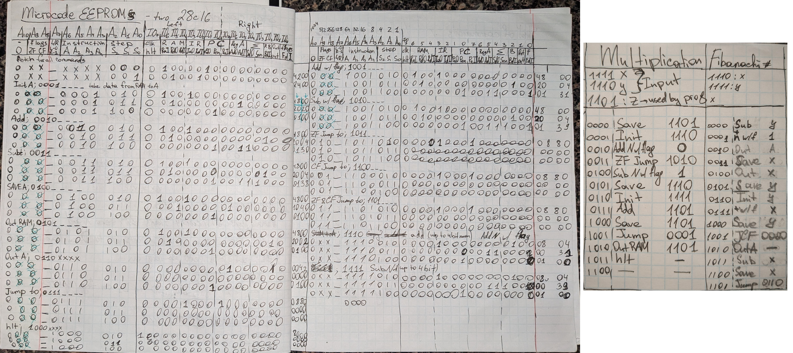

Investigated the future of axial flux motors applications in comparison with more traditional topologies. Review paper presents major parameters for design consideration, proposing methods for losses minimization.
Projects
I guess here is a good place to say I love DIYing things. I strongly believe in right to repair and love making/repairing stuff.
Here are just some of the projects that I either documented or they are significant enough in my opinion to show them here.
GitHub repository
You probably noticed from the design of this webite it is not made by the webdesign genius and I am not pretending to be one. I wanted to gain experience in HTML/CSS/JS and thought creating a portfolio is the greatest way to experiment with web programming. To introduce myself to the subject took a wonderful course at Coursera taught by Yaakov Chaikin. Recommend it to anyone new to the field.
Coursera linkBuilt a processor on breadboards using logic gate ICs, programmed EEPROMs and Microcodes. The assembled architecture consists of the clock, registers, logic unit, RAM, program counter, control logic, and display output. The project was inspired by BenEater, his videos are great at explaining the basics behind complex computer concepts. Currently working on expanding the memory to have more MicroCodes and therefore expand capabilities.

Photo of the completed project
Photo of my notes with Microcode instructions and a couple of programs written for this CPU